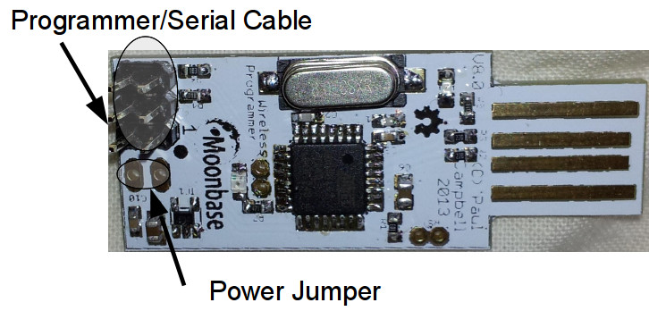
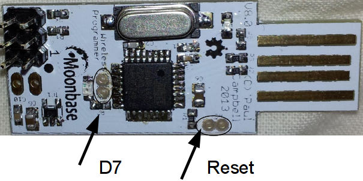

Our programmer is a simple, cheap USB board
By default at power on it simply works as a serial connection, an escape sequence generated by the GUI software gets it into CC25xx programmer mode which changes the functional pinout:
By default it acts as a simple serial
The basic connector is a 3x2 header and either a ribbon cable or a 6-pin TAB-Connect cable and pin header. Connect the cable to the header shown below:
Make sure that the cable comes off the board pointing away from the USB connector - it should connect to the development board with no twists in the cable - pin 1 to pin 1.
By default the programmer will power any board that it's connected to - if for some reason you want to power your board from some other source you can disable this - on the bottom of the board under the area labelled "power jumper" above there is a trace between those two pins - use a modelling knife to carefully cut that trace to disconnect the power to the cable - if you like you can install a 2-pin header (not included) in the two holes there and install a jumper so you can enable and disable power to the cable at will.
The programmer is intended to be used with the programmer GUI 'ccload' - there is a section describing how to use the GUI in the programming document.
The firmware source is available on Github.
Normally you shouldn't need to load your own firmware but if you want to play go ahead - to program your own firmware you'll need to load the dfu-programmer application (Linux users will likely find it already available to them from their existing repositories).
To load new code you first need to put the board into the firmware loading mode:
Plug your programmer into a USB port, short the two 'D7' pins on the board, then short the two 'Reset' pins (I use two pairs of fine tweezers to do this) - the board is now in firmware reload mode, remove the reset short, taking care to keep the board powered on. Once you've done this you need to erase the programmer's CPU:
dfu-programmer at90usb162 erase
Then program it with new code using the command:
dfu-programmer at90usb162 flash Benito7g.hex
Now unplug your programmer and plug it back in, it will come up with the new firmware.
Software and hardware designed can be downloaded from here:
{kind=link}